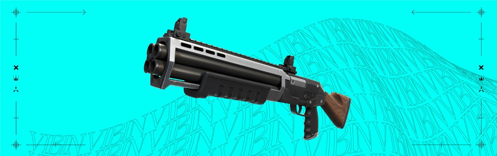
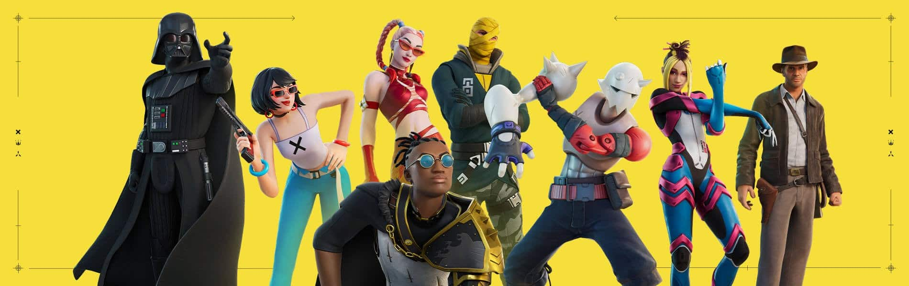
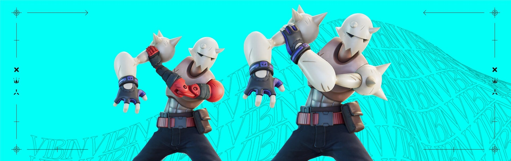

A Epic Games liberou, neste domingo (05), a Temporada 3 de Fortnite: Capítulo 3. Com uma temática festeira, a season traz muitas novidades, incluindo skins do Darth Vader (Star Wars) e Indiana Jones.
Antes de mais nada, a editora exibiu dois trailers para promover o período. No vídeo cinemático, é possível ver até Vader brincando em uma montanha-russa. Já o outro teaser mostra mais da jogabilidade. Assista:
Segundo a Epic, os jogadores encontrarão um novo bioma no mapa da ilha: a “Cachoeira da Realidade”. Nessa floresta existem cogumelos “comuns e quicantes”, árvores roxas, gêiseres, além de haver como nadar por baixo de cachoeiras.
Outra novidade em Fortnite Capítulo 3: Temporada 3, é a presença das “Sementes da Realidade”. Os sobreviventes podem plantá-la ao longo das partidas, para colherem o “Broto da Realidade”. Com ele em mãos, vá tirando suas ervas daninhas para aumentar o nível dos seus saques, até chegar ao level “mítico”.
Enquanto isso, as “Bolas de Hamster” estão de volta à ilha. É possível rolar pelo mapa enquanto a bateria desse veículo durar (quando ela acabar, é necessário procurar outro). Além disso, use-o para entrar no “Bolafuso”, a montanha-russa.
Por falar em transportes, montarias selvagens também se encontram disponíveis na nova temporada. Pule em lobos ou javalis e utilize suas armas em cima deles — pode ser uma vantagem e tanto.
A Epic Games tratou de apresentar três novas armas em Fortnite: Capítulo 3. São elas: a “Espingarda de Dois Tiros”, o “Rifle Atirador de Elite (Rifle A.E.)” e o “Rifle de Assalto Martelo”.
Além disso, também há o retorno dos seguintes armamentos:
Outra novidade da Temporada 3 é que a tempestade — zona fora dos limites no battle royale — está mais perigosa. Quem ficar muito tempo nela desenvolverá o “Distúrbio da Tempestade”, uma “condição que potencializa a redução de vida”, segundo a Epic.
Os jogadores receberão um aviso quando estiverem prestes a desenvolver o tal distúrbio. Para evitar a perda massiva de HP, basta sair da tempestade — entretanto, entre de novo nela, e a condição retornará.
O novo Passe de Batalha conta com várias novidades interessantes, especialmente para os cinéfilos de plantão. Duas skins garantidas para essa temporada são as do Darth Vader (Star Wars) e do Indiana Jones — esta última ficará disponível ao longo da season.
Além desses ícones do cinema, os fãs podem esperar os seguintes trajes:
O Estalido será a skin mais personalizável da ilha. Isso porque, ao desbloqueá-lo na página 1 do Passe de Batalha, ele traz as suas tarefas. Ao concluí-las, o jogador recebe uma “parte” dele (braços, cabeças, pernas e troncos). Combine-as da maneira que achar melhor e monte sua própria versão do personagem.
